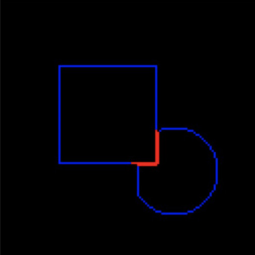

Problem Definition
This is a shape processing project. For each shape image, we will determine the colors of the background and each shape blobs; for each shape blob, we will implement a border following algorithm to find its outermost contour, including the ones that are overlapped; and lastly, we will design an algorithm that can categorize each shape blob into basic geometric shapes.
This will lay a basic foundation for more complicated shape recognition, as we will solve how to determine colors in a noised image, how to follow the contours and then how to categorize the shapes by contours into geometric shapes.
The anticipated difficulties might be the overlapping of the shapes, which makes the categorizing more complicated; and the noises in the images will also be a problem to solve before we can find the object colors.
Method and Implementation
Firstly, we need to denoise the image. This can be achieved by a built-in function in openCV, cv2.fastNlMeansDenoisingColored()
Secondly, we determine the number of blobs in the image and the colors. Though we have denoised the image, but there might still be noises with massive number excluded by the previous method. So we set a standard threshold that once the number of pixels with same rgb value achieves the threshold, it has a great chance to be an actual blob. This threshold is a general percentage of the blob pixels against the image pixels and we get this by testing at least 100 images. Then we find the number of rgb values that have relatively large number of pixels in the image and set it as k. We implement kmeans to cluster k shapes of these rgb values. But there might be noises in these shapes. Thus, we repeat the finding and clustering steps until all the number of the main rgb values are above the threshold. By now we have known the number of blobs in the image and the rgb values.
Thirdly, we find contours and divide them into three categories: borders against the background, borders against another shape blob and borders that are a border of the whole image. For the blob that has part of the border missing would be sharing borders with the whole image. For the other two we need to follow the borders first. We binarize the blob into white and all the others into black, which makes tracing the border easier with greater contrast. Once we get the border of this specific blob by a tracing algorithn, we put it back into the original image to analyze the pixels against the borders. If all the pixels around the border are background color, it is against the background; otherwise, it is against another shape blob.
Lastly, we categorize the blobs into basic geometric shapes by comparing the similarity rate of the border with a 60 degrees line and a horizontal line. We draw two lines from the upper left vertex to the right, one is horizontal and the other is 60 degrees below the horizonal line. Then we compute the error value of the border with each line, E(60) for the 60 degrees and E(0) for the horizontal. If the error value is small, it means the border is quite similar to this line, or in other words, is similar to a square or a triangle. Once we get the two error values, we compute the error ratio by comparing E(60) with E(0). If the ratio is greater than 3, which is a threshold we get by testing, it means E(60) is fairly greater than E(0). Then the border is very likely belong to a square. If the ratio is less than 0.3, it is very likely to be a border of a triangle. The shape with a ratio value that does not satisfy either cases above would be a round.
1. We use denoising(img) to denoise the image in first step. 2. We use countPixel(img) to calculate the pixel number in the image; and kmeans(img, K) to implement clustering in second step. 3. We use Binarize(Color) to binarize specific blobs; Following_Algorithm to trace the border; cutEdges(egdeList, res, BackgroudColor) to categorize the contour in third step. 4. We use shoot() to categorize the blob shapes in the last step.
Experiments
Evaluation metrics: accuracy rate and detection rate.
Threshold: We try to find the standard threshold which indicates to the general percentage of a blob against the image, so that we can compare the number of the majority rgb pixels to this threshold. We first did the test on about 50 images and we found when the percentage of pixel is above 1.2% of the total pixels, which is about 220 pixels, this pixel group is very likely to be a blob, or at least a large area of noises. We count the group number and input this number as parameter k for kmeans to cluster k color groups. To be more accurate, we repeat the above steps by setting the percentage to 3%, which is about 500 pixels by testing 50 images and use kmeans to cluster again. By now we can find the shapes in fairly high accuracy.
Binarize: We binarize the image to make the border tracing process easier. However, after implementing the algorithm, we found there were still dispersed pixels that are missed by the kmeans. So we filter them again by checking the surrounding pixels of each shape to check if it is an actual blob or just a missed pixel. We have checked about 5 layers of periphery pixels to get rid of such fake blobs. However, after running the algorithm, we again found that there might not only be dispersed pixels but dispersed pixel groups. It will cause failure in determining the position of actual shape blobs and tracing the border, but by evaluating we decide that such possibility is fairly low and it is something we can improve in the future.
Border tracing: Then we begin to trace the border. We use N8 function to detect where is the next available shape pixel and use following_algorithm to record the border pixels. The problem is mainly on those shapes that are sharing borders with the image borders. We have to determine which border has this shape shared with the border to avoid out of boundary problem. At first, we only consider the situation that when the pointer turns to the edge border. So we detect first if it is a shape pixel and then detect if is an edge pixel to prevent out of boundary. However, there is also the situation that the pointer starts at an edge position. So we have to edit the algorithm to make the edge detection at the very beginning to make sure it does not start from the edge before running the pointer to find the next shape pixel, and then again make the edge detection when we find the next shape pixel. It is laborious as we kind of list this situation as a special case. But we decide it is not a problem for now so we might improve this part in the future. But when a round or a triangle is sharing border with the right border, we still fail on some of the cases. For certain images with that composition, the pointer will go into a circle when it finishes the border and the tracing will become an infinite loop. It means that in certain situation, the pointer did not find the right next border pixel. But this particular situation is not a very common one and we do not have enough time to compare the loop with the original image to find the problem. So it is also something we will improve.
Shape categorizing: We compute the border gradient to determine its shape. At first we compute the vector of each neighbouring pixels and see the change tendency of the vectors. Once we found a drastical change of 90 degrees, we label it as a square and 60 degrees as a triangle. However, by implementing the algorithm, we found the accuracy rate is really low, as the borders are not smooth and there might be a bunch of slight degree changes among the neighbouring pixels. So we improve our method by launching two lines from the upper left vertex. One is horizontal and the other is 60 degrees below the horizontal line. We compare the overlapping value of the border and our lines to see if it is a square or an triangle. But there is also the problem that when it is a round shape, the value would be really confusing. So again, we change the method to check the error ratio by comparing the error value of the 60 degree one to that of the horizontal one. By testing, we find when the ratio is greater than 3, which means the error value of 60 degree is greater than the value of the horizontal one, it should be a square. Vice versa, if the ratio is less than 3, it is a triangle. And for the rest, it will be labeled as a round. But apparently, there are still cases that will fail the categorizing.
Results
We have tested 30 squares and we have succeeded in 27 of them. Accuracy rate: 90% We have tested 26 triangles and succeeded in 23 of them. Accuracy rate: 88% We have tested 25 round and succeeded in 18 of them. Accuracy rate: 70% In all the accuracy rate is about 82 - 85%.
| Trial | Source Image | Result Image | |
| trial 1 | |||
| trial 2 |  |
||
| trial 3 | |||
| trial 4 | |||
| trial 5 |  |
Discussion
Discuss your method and results:
Strength: We basically realized our goals by implementing our algorithms step by step. We dealt with the noises in the background which makes the project more relevant to the real life situation. We are good at finding staight lines in squares and we can deal with the cases when it touches the image borders. We generally succeed in labeling the shapes given the situation we find the contours successfully.
Weakness: In general, for each step, we will fail in certain cases, so by cumulating, we have an unneglectable fail rate in the end. We have hard coding in many parts due to the limited time, which means we just list some cases as special cases to pass it instead of reorganizing the logic. The structure and logic part is not very sorted so far, which gives us a large space to improve. Specifically speaking, we will fail in finding the starting point by not perfectly smoothing the image. For tracing the border, we did not do well in round shapes. When we go around the round and begin the move upward, it will sometimes return a straight line. And when a round shape touches the image border, we also have a chance of failure by going into an infinite loop. Curve line might be something we missed in tracing the border. For labelling and categorizng, since some of the round shapes will return with a straight line, it will sometimes be labeled as a square. When the overlapping is too complicated, the labeling will also have a hard time.
Improvement: As it is mentioned, we have many places to improve. Firstly, we should deal with the noise groups missed by the kmeans to improve the smoothing of images. Also, we have cases failed in finding contours. Mainly in triangles and round shapes, which are those with a not quite straight borders. This partly leads to some failures in labeling the shapes. We still have a long way to go.
Conclusions
Through our methods, we can find the colors of blobs and background; trace the border and categorize them as geometric shapes with about 82 - 85% accuracy rate.